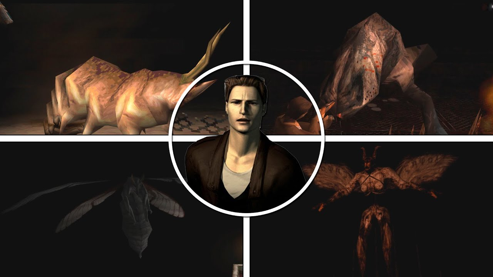

Finales (Endings)
Ha habido cierto debate sobre qué final de Silent Hill es canon. Si bien es un hecho que los finales malos no pueden ser canónicos ya que Heather Mason no nace en estos finales, ha habido debate sobre si Good+ también puede considerarse canon o no. El Libro de recuerdos perdidos afirma que el final bueno básico (en el que Cybil muere) es el "final ortodoxo relacionado con el tercer juego".

Las acciones del jugador a lo largo de la aventura —específicamente el cumplir la misión secundaria de Michael Kaufmann y la elección de salvar o no a la oficial Cybil Bennett— determinarán directamente el destino de los personajes y el cierre de la historia a través de cinco desenlaces posibles:
- Bueno+ (Completa la misión de Kaufmann y salva a Cybil): Cybil intenta dispararle a Dahlia pero falla. Alessa y Cheryl se fusionan en la Incubadora. Kaufmann aparece, le dispara a Dahlia y lanza Aglaophotis a la Incubadora, haciendo que emerja el Incubus. Tras derrotar al dios, la Incubadora le entrega un bebé a Harry y le muestra la salida. Lisa Garland arrastra a Kaufmann al abismo. Harry y Cybil escapan con el bebé.
- Bueno (Completa la misión de Kaufmann y mata a Cybil): Igual al anterior, pero Cybil muere en el carrusel. Harry llega sano y salvo a la carretera en las afueras de la ciudad solo con el bebé, mirando al cielo desconcertado.
- Malo+ (No completes la misión de Kaufmann y salva a Cybil): Alessa y Cheryl se convierten en la Incubadora y matan a Dahlia. Tras la batalla, la Incubadora le agradece a Harry. Harry se desploma de dolor por Cheryl, y Cybil lo golpea para quitarle el dolor, exigiéndole que huya mientras el Otro Mundo se derrumba.
- Malo (No completes la misión de Kaufmann y mata a Cybil): Tras derrotar a la Incubadora, Harry se desploma por la pérdida de su hija. Luego se ve a Harry sangrando por la cabeza, inconsciente en su auto, lo que sugiere que todo fue un sueño de sus sinapsis moribundas tras el accidente inicial.
- OVNI: Final cómico tradicional. Harry usa la Piedra de Canalización en 5 puntos clave, es secuestrado por extraterrestres tras preguntarles por Cheryl y se lo llevan en su nave espacial.